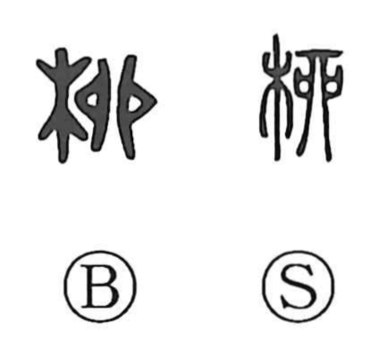

柳

Kun: yanagi | On: ryu
willow ・ willow tree
Explanation
柳 is a phono-semantic character: the left element 木 signals “tree,” while the right element 卯 serves as the phonetic, giving the Sino-Japanese reading ryu. The Shuowen glosses it as “a small yang (楊),” that is, the supple twig of a young willow. In use it simply denotes the willow, and by extension it came to evoke delicate beauty likened to willow grace—hence expressions such as 柳眉, “willow brows.” From the Six Dynasties onward, images like 柳条 (willow branches) and 柳花 (willow catkins) appear as characteristic scenery of the Jiangnan region in Chinese poetry.